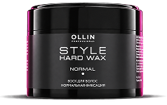
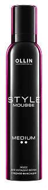
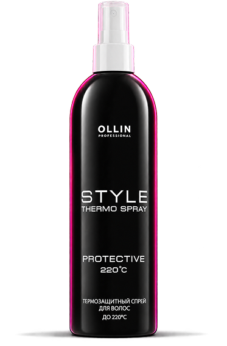
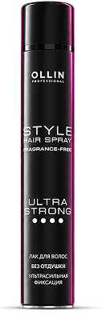

<!doctype html>
<html lang="ru">
<head>
  <meta charset="utf-8">
  <meta name="viewport" content="width=device-width,initial-scale=1,viewport-fit=cover">
  <title>OLLIN Premium Bar</title>

  <!-- Подключаем шрифты Google Fonts. В интернет-доступе они загружаются автоматически. -->
  <link rel="preconnect" href="https://fonts.googleapis.com">
  <link rel="preconnect" href="https://fonts.gstatic.com" crossorigin>
  <link href="https://fonts.googleapis.com/css2?family=Commissioner:wght@500&family=Alumni+Sans:wght@400&display=swap" rel="stylesheet">

  <style>
    /* ================================================================
       01. БАЗОВЫЕ НАСТРОЙКИ
       Высота баннера — 100 px. Фон прозрачный за пределами оформления.
       ================================================================ */
    * {
      box-sizing: border-box;
    }

    html,
    body {
      margin: 0;
    }

    body {
      font: 16px/1.45 "Commissioner", system-ui, sans-serif;
      background: transparent;
      color: #222;
      overflow: hidden;
    }

    /* 02. ОБЩИЙ КОНТЕЙНЕР — фиксируется внизу, занимает всю ширину. */
    .premium-bar{
      position:fixed;
      left:0;
      bottom:0;
      width:100%;
      height:100px;
      z-index:1000;
      isolation:isolate;
      overflow:hidden;
      pointer-events:auto;
    }
    /* 03. ПОВТОРЯЮЩИЙСЯ ФОН — меняйте bg_repeat.png и background-size. */
    .bg{
      position:absolute;
      inset:0;
      background:url('assets/bg_repeat.png') repeat-x 0 42px;
      background-size:20px 58px;
    }
    /* 04. РАБОЧАЯ ОБЛАСТЬ — центрированные 600 x 100 px. */
    .scene{
      position:absolute;
      left:50%;
      top:0;
      width:600px;
      height:100px;
      transform:translateX(-50%);
      overflow:hidden;
      pointer-events:none;
    }
    /* 05. ЛЕНТА — координаты, размер и раскрытие при первом скролле. */
    .ribbon{
      position:absolute;
      left:150px;
      top:0;
      width:444px;
      height:100px;
      background:url('assets/ribbon.png') no-repeat center/contain;
      z-index:1;
      opacity:0;
      transform:scaleY(0);
      transform-origin:50% 50%;
      transition:opacity .72s ease-out,transform .88s cubic-bezier(.22,1,.36,1);
    }
    /* 07. ЛОГОТИП — основной размер и расстояние до нижнего края. */
    .logo{
      position:absolute;
      left:24px;
      top:auto;
      bottom:10px;
      width:auto;
      height:40px;
      z-index:3;
    }

    /* ВСТУПЛЕНИЕ: логотип по центру, проявляется автоматически.
       После первого скролла смещается влево. Эти правила дополняют .logo. */
    .logo{
      left:50%;
      transform:translateX(-50%);
      opacity:0;
      transition:left .85s cubic-bezier(.22,1,.36,1),transform .85s cubic-bezier(.22,1,.36,1),opacity .65s ease;
    }
    .premium-bar.intro-ready .logo{opacity:1}
    .premium-bar.story-started .logo{left:24px;transform:translateX(0);opacity:1}

    /* 08. ТОВАРЫ — общие настройки движения и прозрачности.
       Индивидуальные координаты и высоты задаются ниже в JS: render(). */
    .product{
      position:absolute;
      width:auto;
      object-fit:contain;
      transform-origin:50% 100%;
      opacity:0;
      z-index:5;
      will-change:transform,top,left,height,opacity;
      transition:
        top .75s cubic-bezier(.22,1,.36,1),
        left .75s cubic-bezier(.22,1,.36,1),
        height .75s cubic-bezier(.22,1,.36,1),
        transform .75s cubic-bezier(.22,1,.36,1),
        opacity .28s linear;
      filter:drop-shadow(0 1px 1px rgba(0,0,0,.18));
    }
    .product.hidden {
      opacity:0;
      transform:translateY(135px) rotate(7deg);
    }
    .product.visible {
      opacity:1;
    }
    .product.elastic-in {
      animation:productRise .95s cubic-bezier(.22,1,.36,1) both;
    }
    @keyframes productRise{
      0% {
        transform:translateY(115px) rotate(7deg);
        opacity:0;
      }
      70% {
        opacity:1;
      }
      100% {
        transform:translateY(0) rotate(7deg);
        opacity:1;
      }
    }

    .thermo{z-index:5}
    .mousse{z-index:6}
    .wax{z-index:7}
    .spray{z-index:4}

    /* 09. САЛАТОВЫЕ ПЛАШКИ — размер по тексту, градиент, шрифт.
       Анимация смены плашек находится в JS: updateTag(). */
    .tag{
      position:absolute;
      left:290px;
      top:34px;
      z-index:10;
      width:max-content;
      max-width:220px;
      padding:6px 20px;
      border-radius:6px;
      background:radial-gradient(circle at 50% 0%, #DCFCBB 0%, #9DEC4C 100%);
      color:#090909;
      font-family:"Commissioner",system-ui,sans-serif;
      font-weight:500;
      font-size:18px;
      line-height:1.02;
      letter-spacing:-.02em;
      white-space:pre-line;
      text-align:left;
      opacity:0;
      transform:translateY(115px) rotate(-7deg);
      pointer-events:none;
      transform-origin:top left;
      will-change:transform,opacity;
      box-shadow: inset 0 -1px 0 0 rgba(255, 255, 255, 0.5);
    }
    .tag.final {
      top:18px;
      font-size:17px;
    }
    /* 10. КНОПКА — размер 140 x 22 px, позиция, шрифт и пульсация. */
    .cta{
      position:absolute;
      right:12px;
      top:58px;
      z-index:12;
      display:flex;
      align-items:center;
      gap:3px;
      padding:0 5px 2px 5px;
      width:146px;
      height:26px;
      justify-content:center;
      border-radius:22px;
      background:#fff;
      color:#111;
      text-decoration:none;
      white-space:nowrap;
      font-family:"Commissioner",system-ui,sans-serif;
      font-weight:400;
      font-size:15px;
      line-height:1;
      opacity:0;
      letter-spacing: -0.03em;
      transform:translateY(9px) scale(1);
      transition:opacity .3s ease,transform .3s ease;
      pointer-events:auto;
    }
    .cta.visible{opacity:1;transform:translateY(0) scale(1)}
    .cta svg{width:12px;height:12px;display:block;flex:none}
    .premium-bar:hover .cta.visible{transform:translateY(0) scale(1.07)}
    .premium-bar.pulse .cta.visible{animation:ctaPulse .75s ease-in-out 2;}
    @keyframes ctaPulse{
      0%,100%{transform:translateY(0) scale(1.07)}
      50%{transform:translateY(0) scale(1.12)}
    }

    /* 11. КЛИКАБЕЛЬНАЯ ЗОНА — перекрывает весь баннер 100% x 100 px. */
    .click-area {
      position: absolute;
      inset: 0;
      z-index: 30;
      display: block;
      cursor: pointer;
      pointer-events: auto;
    }

    /* 12. РЕКЛАМНАЯ МАРКИРОВКА — справа внутри области 600 px. */
    .ad-disclosure{
      position:absolute;
      right:max(16px, calc((100% - 600px)/2 + 16px));
      bottom:2px;
      z-index:35;
      pointer-events:none;
      white-space:nowrap;
      text-transform:uppercase;
      font-family:"Alumni Sans",sans-serif;
      font-size:8px;
      line-height:1;
      font-weight:400;
      color:#fff;
      text-align:right;
      opacity: 0;
    }
    .ad-disclosure .mobile-break{display:none}
    /* ================================================================
       13. МОБИЛЬНАЯ ВЕРСИЯ (экран до 600 px)
       Своя рабочая область 300 px; ленты могут выходить за её пределы.
       Координаты товаров для мобильного находятся в JS: productPosition().
       ================================================================ */
    @media(max-width:600px){
      /* Лента не ограничивается шириной мобильной композиции. */
      .scene{width:300px;transform:translateX(-50%);overflow:visible}
      .logo{height:30px;bottom:12px}
      .premium-bar.story-started .logo{left:10px}
      .ribbon{left:35px;width:444px}
      .cta{display:none!important}
      /* Плашка: шрифт и отступы уменьшены до 80% от десктопа. */
      .tag{left:auto;right:16px;top:27px;max-width:185px;font-size:14.4px;padding:3.2px 16px;z-index:4}
      .tag.final{top:27px;font-size:12.8px}
      .ad-disclosure{right:max(16px, calc((100% - 300px)/2 + 16px));white-space:normal;line-height:1.05;bottom:2px}
      .ad-disclosure .mobile-break{display:block}
    }
    /* Масштабирование композиции, если экран уже 300 px. */
    @media (max-width: 300px) {
      .scene {
        transform: translateX(-50%) scale(var(--scale));
        transform-origin: 50% 100%;
      }
    }

    /* Уважение системной настройки «Уменьшение движения». */
    @media (prefers-reduced-motion: reduce) {
      .product,
      .tag,
      .cta {
        transition-duration: .1s;
        animation-duration: .1s !important;
      }
    }

    /* 14. GSAP управляет движением. Отключаем прежние CSS-анимации,
       чтобы они не конфликтовали с GSAP-твинами. */
    .logo, .ribbon, .product, .tag, .cta {
      transition: none !important;
      animation: none !important;
    }
    .premium-bar.story-started .logo,
    .premium-bar.story-started .ribbon,
    .premium-bar.intro-ready .logo,
    .cta.visible,
    .premium-bar:hover .cta.visible {
      transform: none;
    }
    .premium-bar.pulse .cta.visible { animation: none !important; }
    .product.hidden, .product.visible { transform: none; }
    .tag { transform: none; }
  </style>
</head>
<body>
  <aside class="premium-bar" id="bar" aria-label="Рекламный баннер OLLIN">
    <!-- Горизонтально повторяющаяся фоновая полоса -->
    <div class="bg"></div>
    <!-- Центральная композиция: лента, логотип, товары и плашка -->
    <div class="scene" id="scene">
      <!-- Розовая лента -->
      <div class="ribbon"></div>
      
      <!-- Товары в последовательности появления -->
      
      
      
      
      <!-- Плашка: содержимое и анимация задаются в JavaScript -->
      <div class="tag" id="tag"></div>
      <a class="cta" id="cta" href="#" aria-label="Смотреть товары">смотреть товары
        <svg viewBox="0 0 20 20" fill="none" aria-hidden="true">
          <path d="M3 10h13m-5-5 5 5-5 5" stroke="currentColor" stroke-width="2" stroke-linecap="round" stroke-linejoin="round"/>
        </svg>
      </a>
    </div>
    <!-- Ссылка на весь баннер; целевой адрес пока не задан -->
    <!--<a class="click-area" id="clickArea" href="#" aria-label="OLLIN — смотреть товары"></a>-->
    <!-- Обязательная рекламная маркировка -->
    <div class="ad-disclosure" aria-label="Реклама. ООО Астория Косметик, ИНН 7701836734">Реклама. ООО «Астория<span class="mobile-break"></span> Косметик», ИНН 7701836734</div>
  </aside>

  <!-- Локальная GSAP 3.12.2: файл gsap.min.js лежит рядом с index.html. -->
  <script src="./gsap.min.js"></script>
  <script>
    (() => {
      'use strict';

      // 01. ЭЛЕМЕНТЫ — отдельные слои баннера.
      const bar = document.getElementById('bar');
      const scene = document.getElementById('scene');
      const logo = document.querySelector('.logo');
      const ribbon = document.querySelector('.ribbon');
      const tag = document.getElementById('tag');
      const cta = document.getElementById('cta');
      const clickArea = document.getElementById('clickArea');
      const products = {
        thermo: document.getElementById('thermo'),
        mousse: document.getElementById('mousse'),
        wax: document.getElementById('wax'),
        spray: document.getElementById('spray')
      };

      // 02. НАСТРОЙКИ АНИМАЦИИ — здесь удобно менять скорость и easing.
      const MOTION = {
        productDuration: 0.82,
        productEase: 'power3.out',
        productEnterEase: 'back.out(1.12)',
        tagOutDuration: 0.20,
        tagInDuration: 0.72,
        tagEase: 'back.out(1.35)',
        logoDuration: 0.85,
        ribbonDuration: 0.85,
        scrollThreshold: 52,
        actionCooldown: 540
      };

      // 03. КООРДИНАТЫ И РАЗМЕРЫ — каждый кадр и устройство.
      // Все left/top/height указаны в px; rotate — в градусах.
      const FRAMES = {
        desktop: {
          1: { thermo: {left:170, top:0, height:160, rotate:7} },
          2: { thermo: {left:140, top:5, height:150, rotate:7}, mousse: {left:190, top:0, height:180, rotate:7} },
          3: { thermo: {left:110, top:5, height:150, rotate:7}, mousse: {left:160, top:0, height:175, rotate:7}, wax: {left:180, top:45, height:75, rotate:7} },
          4: { thermo: {left:158, top:5, height:95, rotate:0}, mousse: {left:195, top:15, height:88, rotate:0}, wax: {left:220, top:58, height:42, rotate:0}, spray: {left:210, top:5, height:95, rotate:0} }
        },
        mobile: {
          1: { thermo: {left:95, top:0, height:150, rotate:7} },
          2: { thermo: {left:80, top:10, height:150, rotate:7}, mousse: {left:132, top:0, height:175, rotate:7} },
          3: { thermo: {left:60, top:10, height:150, rotate:7}, mousse: {left:115, top:0, height:175, rotate:7}, wax: {left:132, top:55, height:60, rotate:7} },
          4: { thermo: {left:85, top:5, height:95, rotate:0}, mousse: {left:120, top:15, height:85, rotate:0}, wax: {left:109, top:65, height:35, rotate:0}, spray: {left:155, top:5, height:95, rotate:0} }
        }
      };

      // 04. ТЕКСТ САЛАТОВЫХ ПЛАШЕК.
      const TAG_TEXT = {
        1: 'НАЧНИ\nС ЗАЩИТЫ',
        2: 'ЗАДАЙ\nОБЪЁМ',
        3: 'ДОБАВЬ\nТЕКСТУРУ',
        4: 'ДЛЯ ТЕХ,\nКТО ЦЕНИТ\nРЕЗУЛЬТАТ'
      };

      let stage = 0;
      let busy = false;
      let lastActionTime = 0;
      let lastWheelTime = 0;
      let scrollAcc = 0;
      let touchY = null;
      let touchX = null;
      let touchDone = false;
      let currentTimeline = null;
      let hoverTimeline = null;
      let swayTimeline = null;

      function isMobile() { return window.innerWidth <= 600; }
      function coordinates(step) { return FRAMES[isMobile() ? 'mobile' : 'desktop'][step]; }
      function fit() { scene.style.setProperty('--scale', Math.min(1, window.innerWidth / 300)); }

      // 05. ИНИЦИАЛИЗАЦИЯ И АВТОМАТИЧЕСКОЕ ВСТУПЛЕНИЕ.
      function initialize() {
        gsap.set(logo, {left:'50%', xPercent:-50, opacity:0,  x: 0});
        gsap.set(ribbon, {opacity:0, scaleY:0, transformOrigin:'50% 50%'});
        Object.values(products).forEach(el => {
          gsap.set(el, {opacity:0, y:70, rotation:7, transformOrigin:'50% 100%'});
        });
        gsap.set(tag, {opacity:0, y:75, rotation:-7, transformOrigin:'top left'});
        gsap.set(cta, {opacity:0, y:9, scale:1});
        // Начальное появление только центрального логотипа, без ленты.
        gsap.to(logo, {opacity:1, duration:0.7, ease:'power2.out', delay:0.12});
      }

      // 06. СОСТОЯНИЕ ТОВАРОВ. Новые — появляются снизу, прежние — плавно переезжают.
      function productTween(tl, name, opts, isNew, at) {
        const el = products[name];
        el.classList.remove('hidden');
        el.classList.add('visible');
        const target = {
          left:opts.left, top:opts.top, height:opts.height,
          rotation:opts.rotate, y:0, opacity:1,
          duration:MOTION.productDuration,
          ease:isNew ? MOTION.productEnterEase : MOTION.productEase
        };
        if (isNew) {
          gsap.set(el, {
            left:opts.left, top:opts.top, height:opts.height,
            rotation:opts.rotate, opacity:0, y:65
          });
        }
        tl.to(el, target, at);
      }

      // 07. СМЕНА ПЛАШКИ. Вращение строго вокруг верхнего левого угла.
      function addTagTransition(tl, step, at) {
        const hasPrevious = step > 1;
        if (hasPrevious) {
          tl.to(tag, {
            opacity:0, y:8, rotation:-1,
            duration:MOTION.tagOutDuration, ease:'power2.in'
          }, at);
        }
        tl.call(() => {
          tag.textContent = TAG_TEXT[step];
          tag.classList.toggle('final', step === 4);
          if (step === 4) {
            // Финальная плашка: появляется в масштабе 300% и с прозрачностью 0.
            gsap.set(tag, {opacity:0, y:0, rotation:-7, scale:3, transformOrigin:'50% 50%'});
          } else {
            gsap.set(tag, {opacity:0, y:65, rotation:18, transformOrigin:'top left'});
          }
        }, null, at + (hasPrevious ? MOTION.tagOutDuration : 0));
        if (step === 4) {
          // Только четвёртая плашка: плавное проявление + упругое уменьшение до 100%.
          const tagStart = at + (hasPrevious ? MOTION.tagOutDuration : 0) + .015;
          tl.to(tag, {
            opacity:1, duration:0.4, ease:'power2.out'
          }, tagStart);
          tl.to(tag, {
            scale:1, duration:1.1, ease:'elastic.out(1, 0.5)'
          }, tagStart);
        } else {
          tl.to(tag, {
            opacity:1, y:0, rotation:-7,
            duration:MOTION.tagInDuration,
            ease:MOTION.tagEase
          }, at + (hasPrevious ? MOTION.tagOutDuration : 0) + .015);
        }
      }

      // 08. ОСНОВНОЙ СЦЕНАРИЙ — 4 шага. В обратном порядке не проигрывается.
      function goToNextStage() {
        if (stage >= 4) { playProductSway(); return; }
        const next = stage + 1;
        stage = next;
        busy = true;
        bar.classList.add('story-started');
        const tl = gsap.timeline({onComplete:() => {busy = false; currentTimeline = null;}});
        currentTimeline = tl;

        if (next === 1) {
          // Плавное появление рекламной маркировки
          tl.to('.ad-disclosure', {
              opacity: 1,
              duration: 0.6,
              ease: 'power2.out'
          }, 0.2);
          // Первый скролл: логотип уходит влево, ленты раскрываются по Y.

          tl.to(logo, {
            left:isMobile() ? 10 : 24, x: 0, xPercent:0,
            duration:MOTION.logoDuration, ease:'power3.inOut'
          }, 0);
          tl.to(ribbon, {
            opacity:1, scaleY:1,
            duration:MOTION.ribbonDuration, ease:'power3.out'
          }, 0);
          tl.to(cta, {opacity:1, y:0, duration:.38, ease:'power2.out'}, .32);
          cta.classList.add('visible');
        }
        const frame = coordinates(next);
        const newName = ({1:'thermo', 2:'mousse', 3:'wax', 4:'spray'})[next];
        Object.entries(frame).forEach(([name, opts]) => {
          productTween(tl, name, opts, name === newName, .04);
        });
        addTagTransition(tl, next, .12);
      }

      // 09. ПОКАЧИВАНИЕ ТОВАРОВ ПОСЛЕ ФИНАЛЬНОГО КАДРА.
      // Скролл запускает короткую волну слева направо.
      // Исходный угол каждого флакона на финальном кадре — 0°.
      // Здесь можно настроить угол, скорость и задержку между товарами.
      function playProductSway() {
        if (stage < 4) return;

        // При повторном скролле начинаем волну заново, без накопления угла.
        if (swayTimeline) swayTimeline.kill();
        const order = [products.thermo, products.mousse, products.wax, products.spray];
        gsap.killTweensOf(order, 'rotation');
        gsap.set(order, {rotation: 0, transformOrigin: '50% 100%'});

        swayTimeline = gsap.timeline({
          onComplete: () => {
            swayTimeline = null;
          }
        });

        order.forEach((el, i) => {
          const start = i * 0.13;
          swayTimeline
            .to(el, {rotation: 2.7, duration: 0.19, ease: 'sine.out'}, start)
            .to(el, {rotation: -1.5, duration: 0.24, ease: 'sine.inOut'}, start + 0.19)
            .to(el, {rotation: 0, duration: 0.31, ease: 'power2.out'}, start + 0.43);
        });
      }

      // 10. УПРАВЛЕНИЕ СКРОЛЛОМ И СВАЙПАМИ (включая iframe-сообщения).
      function advance() {
        const now = performance.now();
        if (busy || now - lastActionTime < MOTION.actionCooldown) return;
        lastActionTime = now;
        goToNextStage();
      }
      function processWheel(e) {
        if (e.ctrlKey || !e.deltaY) return;
        const now = performance.now();
        if (now - lastWheelTime > 190) scrollAcc = 0;
        lastWheelTime = now;
        const factor = e.deltaMode === 1 ? 16 : e.deltaMode === 2 ? window.innerHeight : 1;
        scrollAcc += Math.abs(e.deltaY) * factor;
        if (scrollAcc >= MOTION.scrollThreshold) {
          scrollAcc = 0;
          advance();
        }
      }
      function reset() {
        if (currentTimeline) currentTimeline.kill();
        if (hoverTimeline) hoverTimeline.kill();
        if (swayTimeline) swayTimeline.kill();
        swayTimeline = null;
        gsap.killTweensOf([logo, ribbon, tag, cta, ...Object.values(products)]);
        stage = 0;
        busy = false;
        scrollAcc = 0;
        lastActionTime = 0;
        bar.classList.remove('story-started', 'pulse');
        tag.textContent = '';
        tag.classList.remove('final');
        cta.classList.remove('visible');
        Object.values(products).forEach(el => el.classList.remove('visible'));
        initialize();
      }
      window.addEventListener('wheel', processWheel, {passive:true});
      window.addEventListener('message', e => {
        if (!e.data || typeof e.data !== 'object') return;
        if (e.data.type === 'ollin-wheel') processWheel({deltaY:e.data.deltaY, deltaMode:0, ctrlKey:false});
        if (e.data.type === 'ollin-swipe') advance();
        if (e.data.type === 'ollin-reset') reset();
        if (e.data.type === 'ollin-shine') playProductSway(); // Совместимость с прежним сообщением демо
      });
      window.addEventListener('touchstart', e => {
        touchY = e.touches[0].clientY;
        touchX = e.touches[0].clientX;
        touchDone = false;
      }, {passive:true});
      window.addEventListener('touchmove', e => {
        if (touchY === null || touchDone) return;
        const dy = touchY - e.touches[0].clientY;
        const dx = touchX - e.touches[0].clientX;
        if (Math.abs(dx) > Math.abs(dy) || Math.abs(dy) < 28) return;
        touchDone = true;
        advance();
      }, {passive:true});
      window.addEventListener('touchend', () => {touchY=null; touchX=null;}, {passive:true});
      window.addEventListener('touchcancel', () => {touchY=null; touchX=null;}, {passive:true});

      // 11. НАВЕДЕНИЕ: две пульсации, без скачка в конце.
      bar.addEventListener('mouseenter', () => {
        if (stage < 1) return;
        if (hoverTimeline) hoverTimeline.kill();
        gsap.killTweensOf(cta);
        gsap.set(cta, {scale:1.07});
        hoverTimeline = gsap.timeline();
        hoverTimeline.to(cta, {scale:1.12, duration:.375, ease:'sine.inOut'})
          .to(cta, {scale:1.07, duration:.375, ease:'sine.inOut'})
          .to(cta, {scale:1.12, duration:.375, ease:'sine.inOut'})
          .to(cta, {scale:1.07, duration:.375, ease:'sine.inOut'});
      });
      bar.addEventListener('mouseleave', () => {
        if (hoverTimeline) hoverTimeline.kill();
        gsap.to(cta, {scale:1, duration:.25, ease:'power2.out'});
      });

      // 12. КЛИК: активна вся площадь 100% × 100 px.
      // Адрес назначения задаётся в href у #clickArea.
      /*cta.addEventListener('click', e => {e.preventDefault(); clickArea.click();});
      clickArea.addEventListener('click', e => {
        if (clickArea.getAttribute('href') === '#') e.preventDefault();
      });*/

      // 13. ИЗМЕНЕНИЕ РАЗМЕРА ЭКРАНА — синхронизация координат без перезапуска истории.
      window.addEventListener('resize', () => {
        fit();
        if (stage < 1) return;
        const frame = coordinates(stage);
        Object.entries(frame).forEach(([name, p]) => {
          gsap.set(products[name], {left:p.left, top:p.top, height:p.height, rotation:p.rotate, y:0});
        });
        gsap.set(logo, {left:isMobile() ? 10 : 24, xPercent:0});
      });

      fit();
      if (typeof gsap === 'undefined') {
        console.error('OLLIN: GSAP не загрузился. Проверьте файл gsap.min.js рядом с index.html.');
        return;
      }
      initialize();
    })();
  </script>
</body>
</html>
